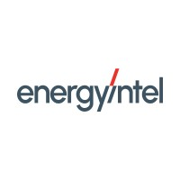
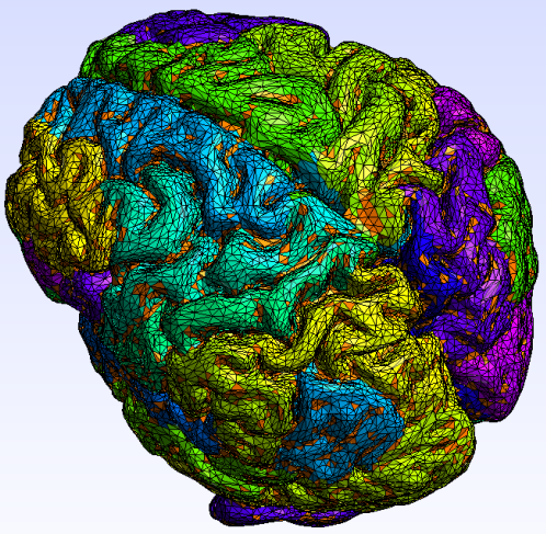

Projects
CO₂ Transport Resilience
ETH Zürich - Zurich, Switzerland
Fall 2025
Developed a techno-economic framework to evaluate resilience strategies in CO₂ transport networks under infrastructure failure scenarios. The model integrates cost, emissions, and operational constraints to determine when redundancy becomes economically viable.
Industrial Internship
EnergyIntel - Nicosia, Cyprus
Summer 2025

Worked on thermal energy storage systems and fluid selection optimization. Developed models to evaluate efficiency, cost, and environmental impact of different heat transfer materials using multi-criteria decision analysis.
Mega Heat Pump Economic Optimization
ETH Zürich, Everllence - Zurich, Switzerland
Fall 2024 - Spring 2025
Developed a comprehensive techno-economic model to evaluate the profitability of large-scale heat pumps providing grid balancing services (FCR). The study combined thermodynamic modeling, electricity market analysis, and optimization to determine the optimal system sizing and operational strategy. Results showed that participation in balancing markets can significantly increase project net present value.
Heat Pump Optimization
ETH Zürich - Zurich, Switzerland
Spring 2025
Designed and optimized a high-efficiency heat pump system for industrial applications. Developed thermodynamic models and evaluated system performance against traditional heating methods, achieving significant energy and emissions reduction.
Household Energy Optimization
ETH Zürich - Zurich, Switzerland
Spring 2025
Built optimization models for residential energy systems integrating real electricity prices, appliance efficiency, and CO₂ emissions. Applied mathematical optimization techniques to minimize operational cost while meeting energy demand constraints.
Design of a High Temperature Heat Pump
University of Cyprus - Nicosia, Cyprus
Fall 2023 – Spring 2024
Designed a high-temperature heat pump system capable of reaching up to 90°C. Developed a full thermodynamic model, analyzing refrigerants, pressure conditions, and system efficiency to maximize performance and sustainability.
HVAC Hardware-in-the-Loop Lab
Texas A&M University - Texas, USA
Summer 2023
Conducted experimental and simulation-based analysis of HVAC systems using a Hardware-in-the-Loop testbed. Evaluated system performance under multiple climate conditions and occupancy scenarios using statistical methods (RMSE, error analysis).
Alzheimer’s Disease Progression Modeling
University of Cyprus - Nicosia, Cyprus
Spring 2022 – Fall 2022
Worked on a mathematical model to study the progression of Alzheimer’s disease, focusing on the propagation of misfolded proteins (Tau and Amyloid-β) across the brain. The model incorporated diffusion mechanisms and neural connectivity using finite element methods to simulate protein concentration across brain regions.
